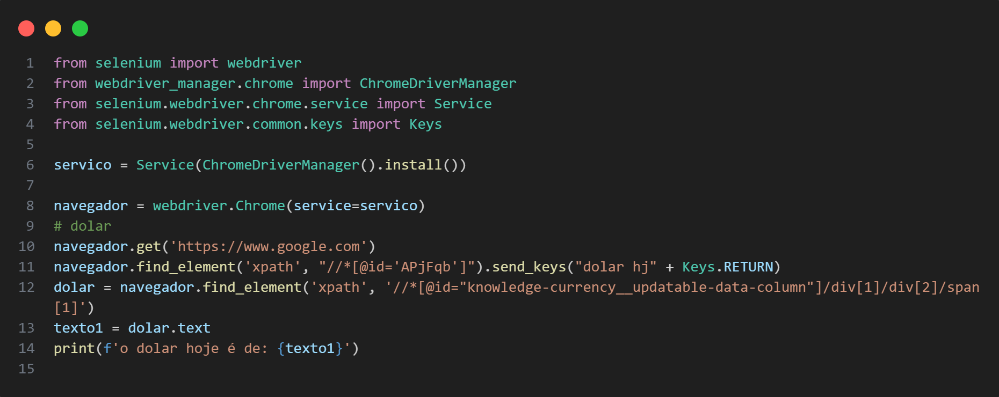
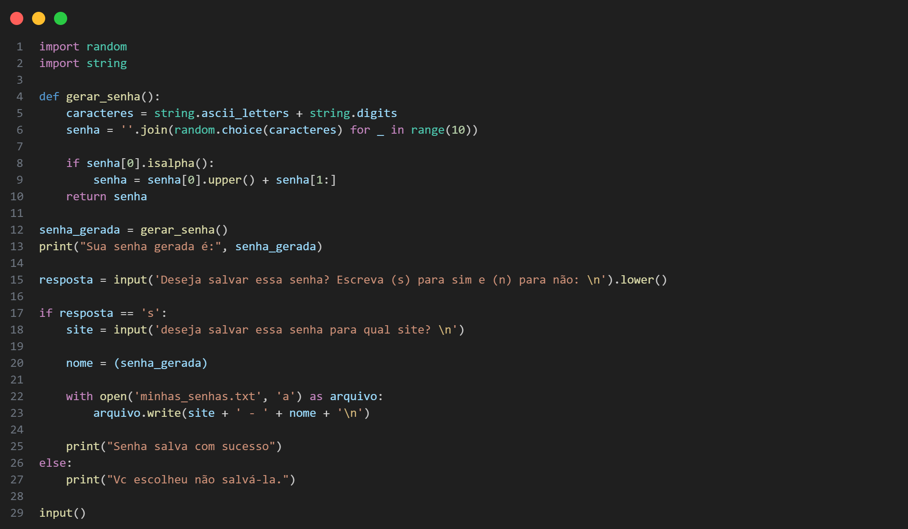
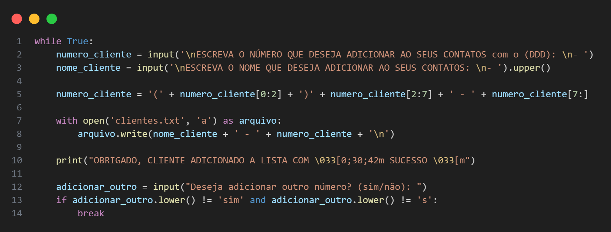
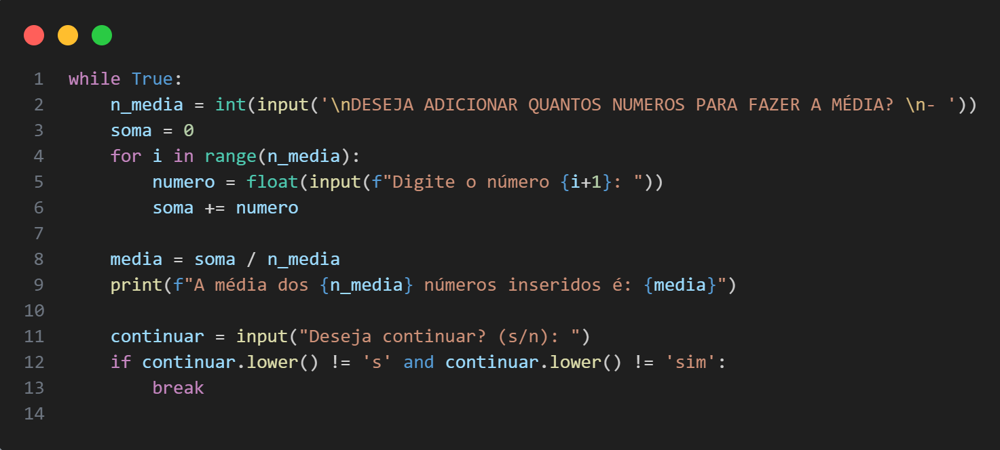
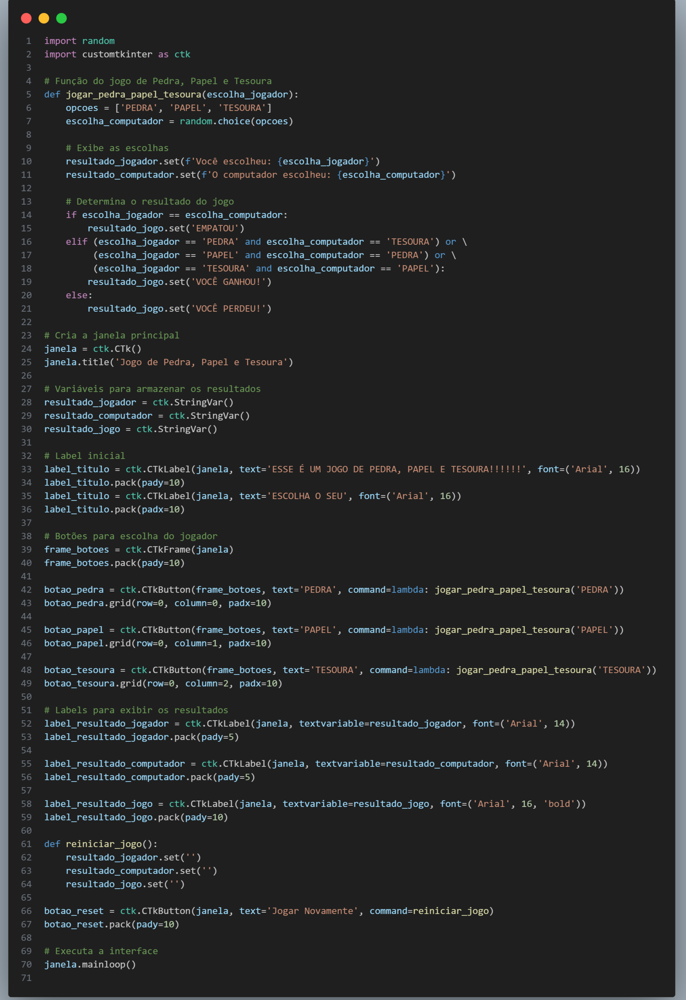

Este projeto consiste em uma automação de conversão de moedas O código funciona da seguinte forma:
1 - Pedir para o bot abrir uma janela no Chrome
2 - Pedir para o bot acessar o site da Google
3 - Pedir para o bot pesquisar o valor da moeda desejada
4 - Pedir para o bot extrair o valor da moeda com base no "xpath"
5 - Repitir o processo para as moedas desejada
6 - printar as conversões das moedas no terminal


Gerador de senhas
Este projeto consiste em um gerador de senhas e armazenamento.
Nesse codigo é usado a biblioteca "random" para geral senhas aleatórias q incluem numeros.
Este projeto tem como finalidade a seguraça e uma organização melhor.
Como funciona o codigo:
1 - Ao rodar o código ele ira gerar uma senha aleatória
2 - Irá perguntar se deseja salva a senha gerada ou não
3 - Caso sua escolha seja salvá-la, será perguntado para qual site o usuário deseja salvar a senha
4 - o nome do site e a senha serão armazenados em um arquivo (.txt) na maquina do usuário
5 - Caso não deseje salvá-la, será interrompido o código
Adicionador de Contatos
Este projeto consiste em um programa para adicionar contatos a uma lista, salvando o nome e o número de telefone dos clientes em um arquivo de texto. O código permite a adição contínua de novos contatos conforme a necessidade do usuário.
Como funciona o código:
Entrada do Dados: O usuário insere o número de telefone (com DDD) e o nome do cliente. Formatação e Salvamento: O número de telefone é formatado e, junto com o nome do cliente, é salvo no arquivo clientes '.txt' Confirmação: O programa exibe uma mensagem de confirmação. Repetição: O usuário pode optar por adicionar outro contato ou encerrar o programa.

Gerador de senhas
Este projeto consiste em um gerador de senhas e armazenamento.
Nesse codigo é usado a biblioteca "random" para geral senhas aleatórias q incluem numeros.
Este projeto tem como finalidade a seguraça e uma organização melhor.
Como funciona o codigo:
1 - Ao rodar o código ele ira gerar uma senha aleatória
2 - Irá perguntar se deseja salva a senha gerada ou não
3 - Caso sua escolha seja salvá-la, será perguntado para qual site o usuário deseja salvar a senha
4 - o nome do site e a senha serão armazenados em um arquivo (.txt) na maquina do usuário
5 - Caso não deseje salvá-la, será interrompido o código
Calculadora de Média
Este projeto consiste em uma calculadora de média que permite ao usuário inserir uma quantidade personalizada de números e calcular a média desses valores. O código é escrito em Python e utiliza um loop while para permitir a repetição do processo de cálculo conforme a necessidade do usuário.
Como funciona o código:
Solicitação da Quantidade de Números: O programa pergunta ao usuário quantos números ele deseja inserir para calcular a média. Entrada dos Números: O usuário insere a quantidade de números especificada, um por um. Cálculo da Média: A média dos números inseridos é calculada somando todos os números e dividindo pelo total de números inseridos. Exibição do Resultado: A média calculada é exibida na tela. Opção de Continuar: O usuário é perguntado se deseja continuar calculando outras médias. Encerramento do Programa: Se o usuário escolher não continuar, o programa é encerrado.


Jogo de Pedra, Papel e Tesoura
Este projeto consiste em um jogo de Pedra, Papel e Tesoura desenvolvido em Python, utilizando a biblioteca customtkinter para a interface gráfica. O objetivo deste jogo é proporcionar uma experiência divertida e interativa, onde o usuário pode desafiar o computador em um clássico jogo de escolha.
Como funciona o código:
Inicialização do Jogo: Ao iniciar o código, uma janela gráfica é criada com o título "Jogo de Pedra, Papel e Tesoura".
Escolha do Jogador: O jogador pode escolher entre três opções - Pedra, Papel ou Tesoura - clicando em um dos três botões correspondentes.
Escolha do Computador: O computador faz uma escolha aleatória entre Pedra, Papel e Tesoura utilizando a biblioteca 'random'.
Exibição dos Resultados:
A escolha do jogador e do computador são exibidas na tela.
O resultado do jogo é determinado pelas regras tradicionais do jogo:
Pedra vence Tesoura
Tesoura vence Papel
Papel vence Pedra
Escolhas iguais resultam em empate
O resultado (Vitória, Derrota ou Empate) é mostrado na tela.
Reiniciar o Jogo: Um botão de "Jogar Novamente" permite que o jogador reinicie o jogo, limpando as escolhas anteriores e o resultado. Estrutura do Código:
Função Principal (jogar_pedra_papel_tesoura): Esta função é responsável por realizar a escolha aleatória do computador, comparar com a escolha do jogador e determinar o resultado do jogo.
Interface Gráfica: Utiliza customtkinter para criar a janela principal e adicionar botões e labels para interação do usuário. Labels e Botões:
Labels para exibir instruções e resultados.
Botões para as escolhas do jogador (Pedra, Papel, Tesoura).
Botão de reinício para limpar os resultados e permitir um novo jogo.